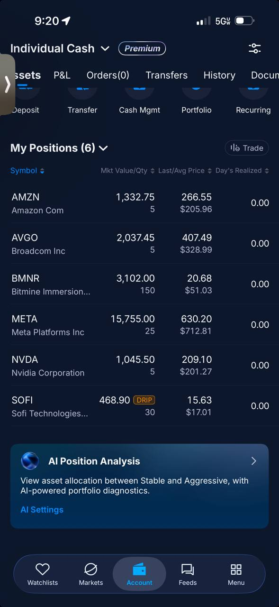
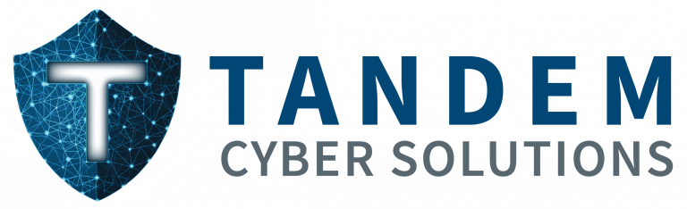
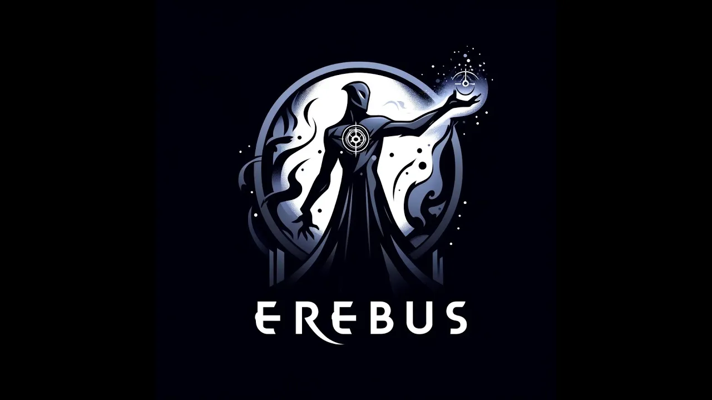

Cybersecurity Leader · Builder · Founder
Anthony
Jirouschek
15 years building, breaking, and securing enterprise systems
About
Cybersecurity practitioner
Builder & Operator
USAF Cyberwarfare veteran with 15 years running Threat Detection, Purple Teaming, and Threat Hunting at enterprise scale. I've spent my career on the hardest parts of security, proving whether defenses actually work, building the programs and tooling to do it repeatably, and training the teams that carry it forward.
Outside of the day job, I build things. Tandem brings high quality pentesting to the small to medium sized business channel. Redact is a fully local redaction tool developed for attorneys. C-Suite Cyber Podcast brings security conversations to the executives who own the decisions.
I don't just identify problems, I build solutions to them.
Experience
15 Years Making Adversaries Try Harder
Lead AI Detection Engineer
Spectrum Security
- Building and scaling AI driven threat detection that works at any business level at Spectrum Security.
- Translating deep detection engineering expertise into scalable, automated security tooling.
Cyber Threat Detection Manager | Testing Lead
Capital One · Multiple Senior Roles
- Led detection testing and validation across 600+ rules, combining offensive techniques with detection engineering to identify and close gaps before attackers exploited them.
- Built CORE, an automation platform reducing ~80% of time across the detection lifecycle, increased efficiency across all audited detection functions.
- Engineered synthetic log injection in AWS DataBricks to validate detections as code, enabling training without live attack execution from OffSec partners.
- Built and managed the Purple Team program, delivered custom adversary simulations for CSOC analysts. This expanded from the previous Cyber Chaos Engineering team that specialized in uncovering domain-wide risks.
Sr. Cybersecurity Operations Manager / Cyber Warfare Operator
United States Air Force
- Cofounded the Hunt function at AFCERT; uncovered adversary operations and developed defender capabilities for repeated success.
- Managed security operations for 245 locations, safeguarded 750K systems against advanced nation-state adversaries.
- Led a 200-member cross-functional team across Incident Response, HBSS, Vulnerability Assessment, Hunt, and Digital Forensics.
Pentesting Partnerships
Tandem Cyber Solutions
Tandem is a boutique pentesting firm built for the Small-Medium sized business & MSP market. As Director of Partnerships, I build the channel that brings enterprise grade security assessments to MSPs and their clients. This turns security into a recurring revenue stream, not a one time project.
If you run an MSP and want to scale your security stack with elite offensive talent, without the overhead of building an internal team, let's partner.

Legal Redaction Software
Redact
A fully local desktop app for attorneys to redact PHI and sensitive information from litigation documents. With both custom and library based detections, you can easily identify the data you may want to redact. No data leaves the machine, ever. Protecting attorney client relationships while reducing the mundane work of removing sensitive data for the jury.
Built at v0.1.4, coming to market. If you're in legal ops and dealing with redaction at volume, get in touch for early access.
Detection Validation Platform
Erebus
Synthetic log injection for validating detections as code. Built to solve the headaches I experienced myself. Validate your security posture without requiring the expertise of an offensive team.
Erebus is available to purchase. If you're a security vendor or detection engineering team looking for a proven validation platform, let's talk!

Security for Decision-Makers
C-Suite Cyber Podcast
Co-hosted with Mike Small, C-Suite Cyber brings security conversations to the executives who own the decisions. We talk strategy, risk, and leadership to the people who set the agenda.
New episodes on YouTube. Subscribe to stay current on the threats that matter at the top.
Gamified Life OS
LevelUp
Transform your life into an RPG. LevelUp turns habits and goals into a character progression system — complete tasks, earn XP, and level up your avatar across categories like Health, Wealth, and Career.
AI-powered goal generation breaks big objectives into actionable tasks. Available on Web and iOS.
AI Agent Security
Sentinel
Runtime security platform for AI agents. Sentinel sits inline between your application and LLM providers, detecting prompt injection, privilege escalation, and data exfiltration in real time — across Anthropic, OpenAI, Bedrock, and Azure.
Model-agnostic, under 20ms latency at p99. YAML-based policy configuration. Built for teams deploying AI agents in production who need to see the whole attack, not just the prompt.